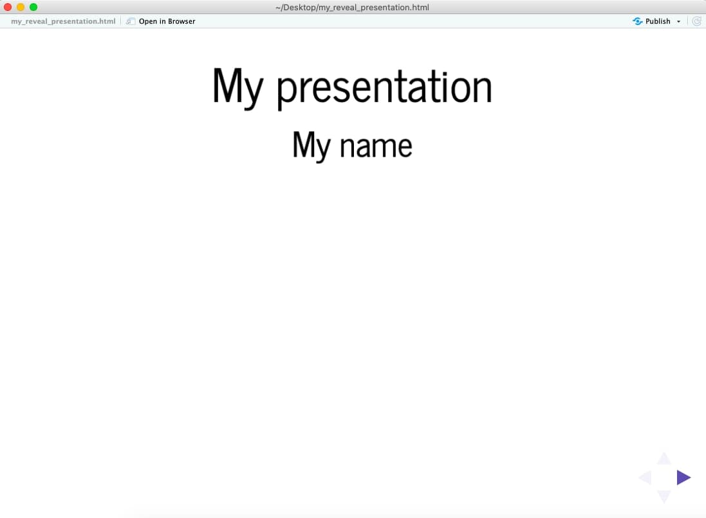

Blog
How to create stunning presentations using Reveal.js in R

I recently found out about an R package that allows you to create Reveal.js presentations in R using RMarkdown syntax. If you are like me and love to display cool graphs in your slides, don’t miss this short tutorial!
Why you need to start using Reveal.js in R
Okay, so you already know how to use PowerPoint. Why using something different then? 🤔 There are many reasons, actually, but one of them is that PowerPoint doesn’t allow you to display interactive graphs in your presentation.
Interactive graphs are becoming more and more popular nowadays thanks to the development of different graphing libraries and packages. One of the tools I use often is Plotly, which can be used with either Python, R, or Javascript.
I personally use R because I normally analyze my data in RStudio, so it’s very convenient for me to plot my results directly there. Unfortunately, PowerPoint doesn’t allow you to insert these cool graphs in your slides. If you did, these would be displayed as static graphs, which is not what we want!
One possible solution for this would be to use a presentation software that allows you to insert your interactive graph as an iframe. In fact, Reveal.js does precisely that. However, in order to use it you need to build your slides from scratch using HTML, CSS, and Javascript. In other words, this means coding, coding, and more coding. 🤯
Luckily, there’s an R package that allows you to create your Reveal.js presentation from RStudio using RMarkdown syntax.
Creating a Reveal.js presentation from RStudio
Install packages
Before you can start, you need to install a couple packages. The revealjs package is the one used for the presentation, whereas plotly is used for the interactive graphs. Make sure you also load the packages once installed.
install.packages(revealjs)
install.packages(plotly)
(Note: I’m assuming you have already installed RMarkdown).
Create a new RMarkdown document
When you have your packages ready, open a new RMarkdown document in RStudio and save it.
You will have to insert the following info on top (of course, you can modify the title and author, or even add a date):
---
title: "My presentation"
author: My name
output:
revealjs::revealjs_presentation
---
This is the basic information you need, but you can always add more info as you become more proficient using the revealjs package. For example, you can add transition effects between slides and other cool things. To learn more about this, you can read the official documentation here.
Define your slides
Okay, so you are now ready to begin creating your slides! Main slides are defined by the code # Slide title (like a level 1 header), whereas secondary slides are defined by ## Slide title (like a level 2 header).
Add content to your slides
After defining your slides, you can add content to them. To do this, simply add whatever text or code you want to display in your slide right below the slide title. The code for a simple presentation would look like this:
# Languages I want to learn
## Chinese
There are several varieties of Chinese.
About 1.2 billion people speak some form of Chinese.
## Arabic
Arabic is a Semitic language.
It is the lingua franca of the Arab world.
## Swedish
Swedish is predominantly spoken in Sweden.
It is mutually intelligible with Norwegian and Danish.
An important thing to keep in mind is that you can’t add content below main slides (i.e.,# Slide title), since they are considered title slides.
Create interactive graphs
This is the fun part! 📊📈
You can now use the plotly library and add the code for your graphs directly below a ## Slide title. You can find some sample Plotly graphs (together with their R code) here.
Display interactive graphs
Once you’re done creating your cool interactive graphs, you can modify what will be displayed in your slides by default.
When you create a Plotly graph, your Reveal.js slide will include your graph, your code, and any warnings generated by your code. This doesn’t look professional if you just want to display your graph, so you would need to “hide” that information.
To do this, you will have to add some extra information at the beginning of your code chunk (next to the {r}). Some examples are:
{r, echo=FALSE}: This means that whatever is in the code chunk will be ignored (i.e., not displayed).{r, echo=FALSE, warning=FALSE, message=FALSE}: This hides the code, the warnings, and any other messages you might get.
There are many other options you can use. You can read about them in the official RMarkdown documentation.
Render your presentation
To see your presentation, click on the knit button on the top and then choose the option “knit to revealjs”. A new window will pop up with your slides (see screenshot below).
You can use the little arrows on the bottom right to navigate the slides.

Enjoy!
So you just created your first presentation with Reveal.js from RStudio. Congrats! 🎉
The next step would be to read the documentation so you can customize your slides and make them look prettier. You can find a more advanced tutorial for this here.
Have fun creating your slides! 😊